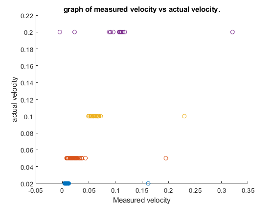

clc, clear all, close all
vrel_point05 = load('V_x_relsave_pt05.mat');
vrel_pt02 = load('V_x_relsave_pt02.mat');
vrel_pt2 = load('V_x_relsave_pt2.mat');
vrel_pt1 = load('V_x_relsave_pt1.mat');
v_real_actualpt02 = 0.02 * ones(1, 122);
v_real_actualpt05 = 0.05*ones(1, 82);
v_real_actualpt2 = 0.2*ones(1, 16);
v_real_actualpt1 = 0.1*ones(1, 31);
figure(1)
scatter(vrel_pt02.V_x_rel_save(1:122)', v_real_actualpt02)
hold on
scatter(vrel_point05.V_x_rel_save(1:82)', v_real_actualpt05)
scatter(vrel_pt1.V_x_rel_save(1:31)', v_real_actualpt1)
scatter(vrel_pt2.V_x_rel_save(1:16)', v_real_actualpt2)
xlabel('Measured velocity')
ylabel('actual velocity')
title('graph of measured velocity vs actual velocity.')
hold off
